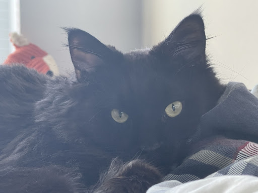

Brul Cat
Brul is a 2yr old Maine coon cat. She prefers to spend his days lying in the bed. She enjoys watching outside from the window as long as there are no loud noises and bugs outside.
Brul loves walks on the beach and taking sun naps on a warm summer day. Brul is a playful cat but enjoys having slow, relaxed days at the same time. She hates grooming and bathing.
Photo Gallery


Likes
- Eating
- Sleeping
- Scratches
Cody Dog

Cody is a 7yr old Pembroke Corgi. He was born in Cavalier Farms, Seattle. He prefers to spend his days lounging on the bean bag. Every day, he enjoys two walks around the neighborhood and likes to make friends with other doggie friends. If lucky enough, he might see the cyclist, but he is not allowed to give chase.
Cody loves traveling. He enjoys walking on the beach and taking sun naps. But he hates cold weather. He would like to stay at home lounging by the fireplace in winter.
Photo Gallery


Likes
- Traveling
- Lounging
- Tennis balls
Peddie Dog

Peddie, the Golden Retriever, is a charming and lively companion known for his beautiful coat and playful nature. He's a perfect partner for outdoor fun, loved for his loyalty and gentle disposition.
Peddie's intelligence and friendly demeanor make him a beloved member of his family and a source of joy for everyone who knows him.
Photo Gallery


Likes
- Swimming
- Running in the park
- Meeting new friends
Juno Dog

No one knows exactly what breed Juno is, but that makes him all the more special. He was adopted before he was one year old; despite this and his German shepherd-esque looks, he stayed close to the same size, hovering around 50 lbs into adulthood. At the weathered age of ten years old, Juno is dealing with hip problems, but manages to stay in good spirits.
One of Juno’s favorite pastimes is finding the dirtiest puddle within a one-mile radius and making sure every inch of him makes contact with said puddle. If rolling around in dirt was an Olympic sport, Juno would have been the one that facilitated its inclusion into the Olympics.
Photo Gallery


Likes
- Human food
- Head pats
- Sleeping
Oliver Dog

Meet Oliver, an 8-year-old labradoodle who embodies the true spirit of a gentle giant. His days are spent sprawled out on the living room rug, which he has affectionately claimed as his own. His favorite pastime is watching the world go by through the window, offering an occasional tail wag to passersby who take notice of his charming, fluffy appearance.
But as night falls, Oliver undergoes a dramatic transformation. It's as if he's been recharged with boundless energy. He dashes to his toy bin, selecting his most cherished plush toys and scattering them around the room. The real show begins when he starts a playful game of hide-and-seek, darting behind furniture and peeking out with mischievous eyes. His family often hears the telltale rustling of his toys and the pitter-patter of his paws as he orchestrates his late-night escapades.
Photo Gallery


Likes
- Chasing Tennis Balls
- PRolling in the Grass
- Sneaking onto the couch